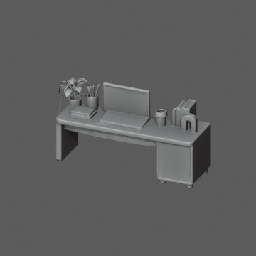홈오피스 책상홈오피스 · Surface · None · Floor상판 소품이 본체와 연결되어 원형 유지107446 trianglesAssets/Gameplay/Item/Furniture/Surface/HomeOffice/Desk.prefab
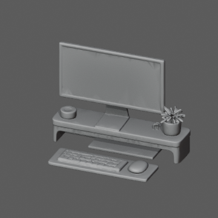컴퓨터 세트홈오피스 · Display · None · Surface모니터 받침대, 키보드, 마우스를 하나의 세트로 유지75528 trianglesAssets/Gameplay/Item/Furniture/Display/HomeOffice/ComputerSet.prefab
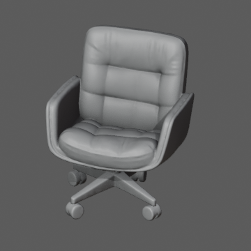사무용 의자홈오피스 · Seating · None · Floor72452 trianglesAssets/Gameplay/Item/Furniture/Seating/HomeOffice/OfficeChair.prefab
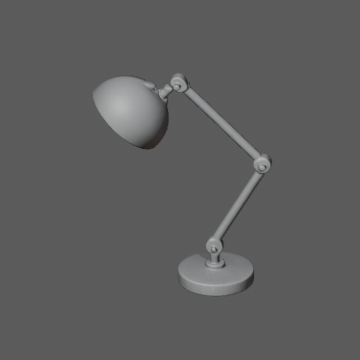탁상 조명홈오피스 · Lighting · None · Surface35714 trianglesAssets/Gameplay/Item/Furniture/Lighting/HomeOffice/DeskLamp.prefab
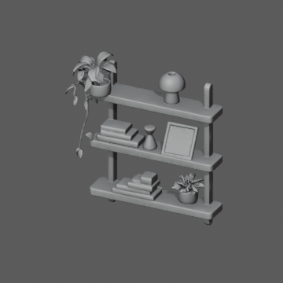오픈 선반홈오피스 · Storage · General · Floor135104 trianglesAssets/Gameplay/Item/Furniture/Storage/General/HomeOffice/Shelf.prefab
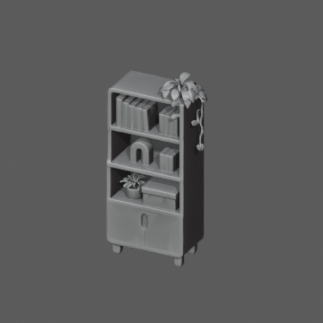책장홈오피스 · Storage · Books · Floor105026 trianglesAssets/Gameplay/Item/Furniture/Storage/Books/HomeOffice/Bookcase.prefab
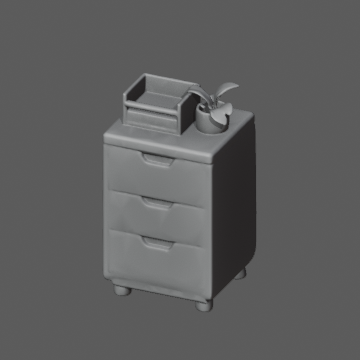서랍장홈오피스 · Storage · General · Floor34606 trianglesAssets/Gameplay/Item/Furniture/Storage/General/HomeOffice/DrawerUnit.prefab
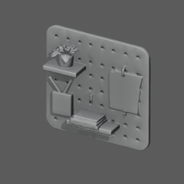벽 장식 보드홈오피스 · Decoration · None · Wall64938 trianglesAssets/Gameplay/Item/Furniture/Decoration/HomeOffice/WallOrganizer.prefab
스피커 A홈오피스 · Music · None · Surface6048 trianglesAssets/Gameplay/Item/Furniture/Music/HomeOffice/SpeakerA.prefab
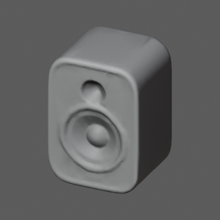스피커 B홈오피스 · Music · None · Surface5944 trianglesAssets/Gameplay/Item/Furniture/Music/HomeOffice/SpeakerB.prefab
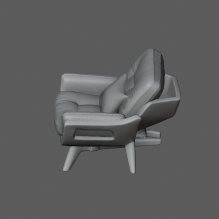패브릭 의자홈오피스 · Seating · None · Floor113666 trianglesAssets/Gameplay/Item/Furniture/Seating/HomeOffice/LoungeChair.prefab
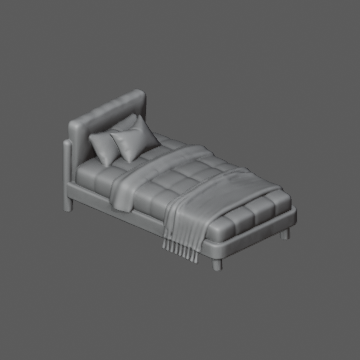침대안방 · Sleep · None · Floor78774 trianglesAssets/Gameplay/Item/Furniture/Sleep/Bedroom/Bed.prefab
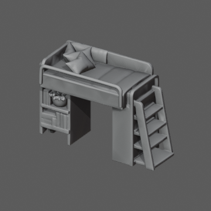수납 벙커침대안방 · Sleep, Storage · General · Floor117394 trianglesAssets/Gameplay/Item/Furniture/Sleep/Bedroom/LoftBed.prefab
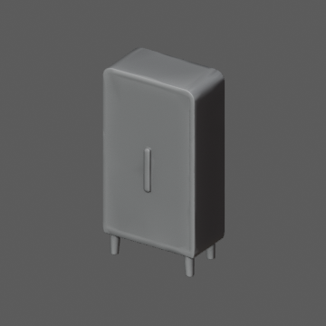옷장안방 · Storage · Clothing · Floor9480 trianglesAssets/Gameplay/Item/Furniture/Storage/Clothing/Bedroom/Wardrobe.prefab
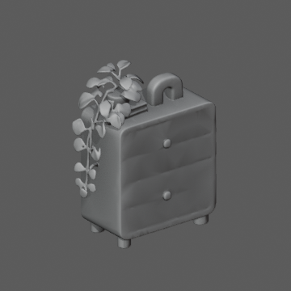서랍장안방 · Storage · General · Floor79018 trianglesAssets/Gameplay/Item/Furniture/Storage/General/Bedroom/ChestOfDrawers.prefab
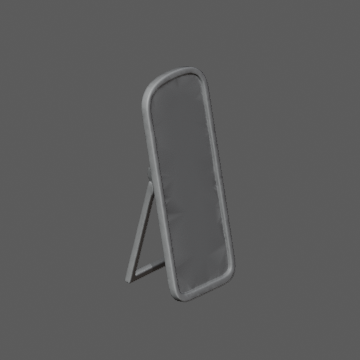전신거울안방 · Decoration · None · Floor29724 trianglesAssets/Gameplay/Item/Furniture/Decoration/Bedroom/Mirror.prefab
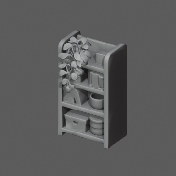수납장안방 · Storage · General · Floor62706 trianglesAssets/Gameplay/Item/Furniture/Storage/General/Bedroom/StorageShelf.prefab
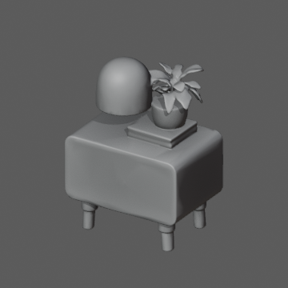침대 협탁안방 · Storage · General · Floor원본에 포함된 작은 협탁도 일반 수납으로 보존39020 trianglesAssets/Gameplay/Item/Furniture/Storage/General/Bedroom/BedsideCabinet.prefab
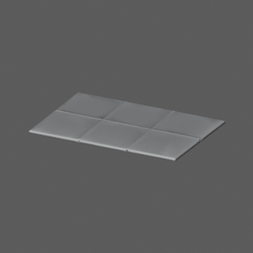러그안방 · Decoration · None · Floor8340 trianglesAssets/Gameplay/Item/Furniture/Decoration/Bedroom/Rug.prefab
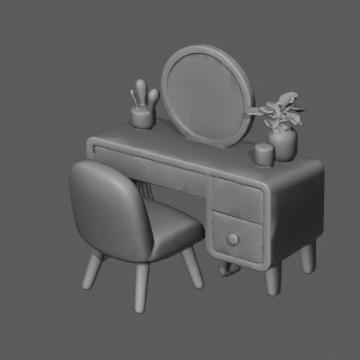장식용 화장대안방 · Decoration · None · Floor의자를 포함한 장식 세트; Seating 없음90010 trianglesAssets/Gameplay/Item/Furniture/Decoration/Bedroom/Vanity.prefab
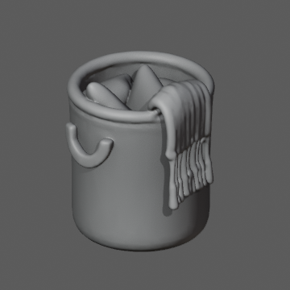빨래바구니안방 · Decoration · None · Floor47866 trianglesAssets/Gameplay/Item/Furniture/Decoration/Bedroom/LaundryBasket.prefab
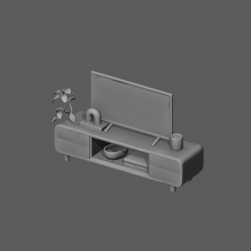TV 세트거실 · Display · None · FloorTV장 및 연결된 장식 유지61722 trianglesAssets/Gameplay/Item/Furniture/Display/LivingRoom/TVSet.prefab
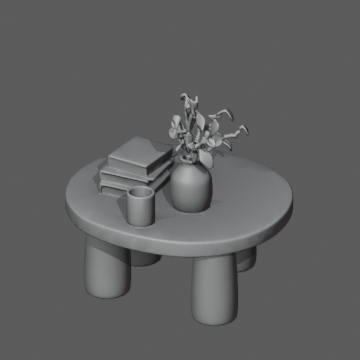장식 포함 원형 테이블거실 · Decoration · None · Floor장식과 상판이 하나의 연결 메시: 요청대로 Decoration67418 trianglesAssets/Gameplay/Item/Furniture/Decoration/LivingRoom/CoffeeTableDecorated.prefab
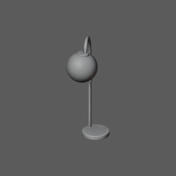스탠드 조명거실 · Lighting · None · Floor14302 trianglesAssets/Gameplay/Item/Furniture/Lighting/LivingRoom/FloorLamp.prefab
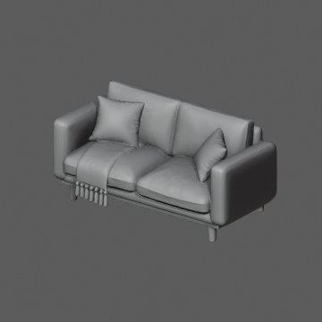소파거실 · Seating · None · Floor72466 trianglesAssets/Gameplay/Item/Furniture/Seating/LivingRoom/Sofa.prefab
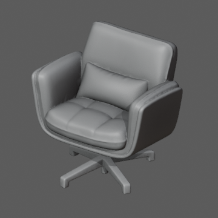회전 의자거실 · Seating · None · Floor44816 trianglesAssets/Gameplay/Item/Furniture/Seating/LivingRoom/SwivelChair.prefab
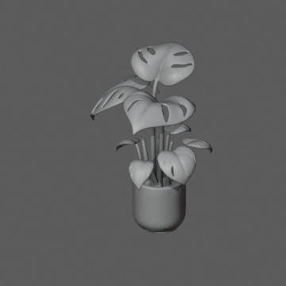큰 화분거실 · Decoration · None · Floor116736 trianglesAssets/Gameplay/Item/Furniture/Decoration/LivingRoom/Plant.prefab
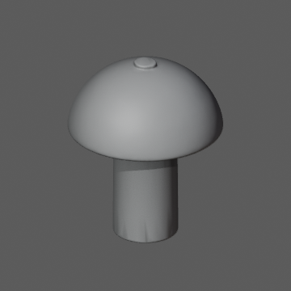탁상 조명거실 · Lighting · None · Surface8164 trianglesAssets/Gameplay/Item/Furniture/Lighting/LivingRoom/TableLamp.prefab
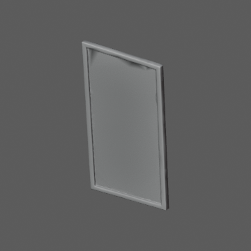그림 액자 A거실 · Decoration · None · Wall6832 trianglesAssets/Gameplay/Item/Furniture/Decoration/LivingRoom/FrameA.prefab
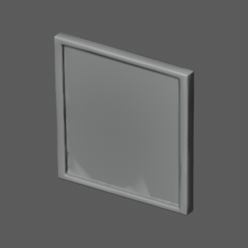그림 액자 B거실 · Decoration · None · Wall2458 trianglesAssets/Gameplay/Item/Furniture/Decoration/LivingRoom/FrameB.prefab
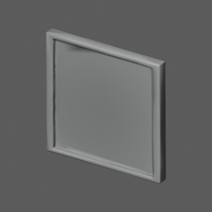그림 액자 C거실 · Decoration · None · Wall2032 trianglesAssets/Gameplay/Item/Furniture/Decoration/LivingRoom/FrameC.prefab
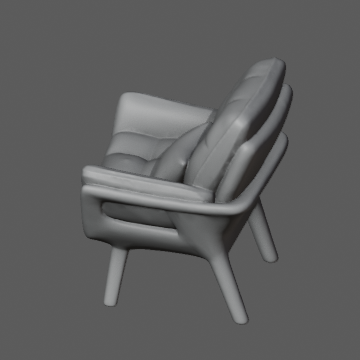나무 프레임 의자거실 · Seating · None · Floor51948 trianglesAssets/Gameplay/Item/Furniture/Seating/LivingRoom/Armchair.prefab
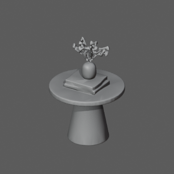장식 포함 작은 테이블거실 · Decoration · None · Floor장식과 상판이 하나의 연결 메시: 요청대로 Decoration38738 trianglesAssets/Gameplay/Item/Furniture/Decoration/LivingRoom/SideTableDecorated.prefab
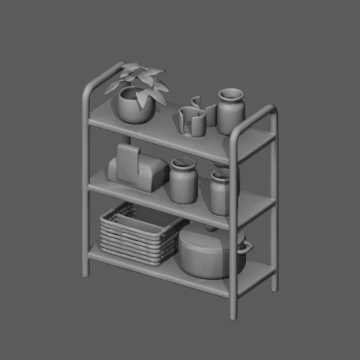주방 선반주방 · Decoration · None · Floor88660 trianglesAssets/Gameplay/Item/Furniture/Decoration/Kitchen/Shelf.prefab
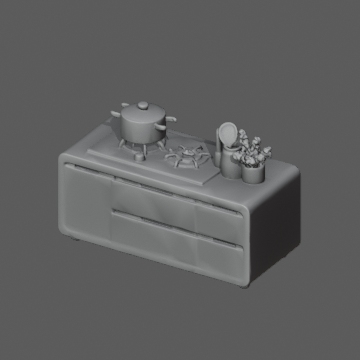가스레인지 아일랜드주방 · Cooking · None · Floor가스레인지, 화분, 하부장이 연결되어 Cooking 세트 유지93250 trianglesAssets/Gameplay/Item/Furniture/Cooking/Kitchen/CookingIsland.prefab
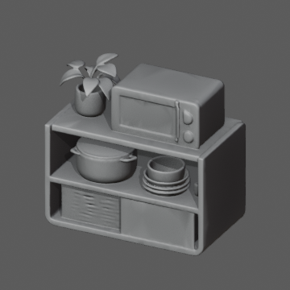전자레인지 선반주방 · Cooking · None · Floor전자레인지와 받침장이 연결되어 Cooking 세트 유지152852 trianglesAssets/Gameplay/Item/Furniture/Cooking/Kitchen/MicrowaveCabinet.prefab
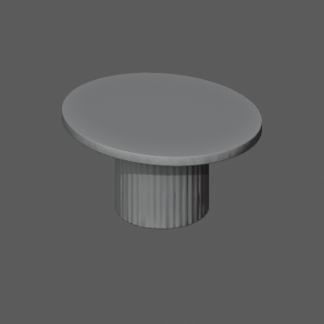식탁주방 · Surface · None · Floor상판 높이에서 장식을 절단하고 구멍을 메워 식탁만 보존33642 trianglesAssets/Gameplay/Item/Furniture/Surface/Kitchen/DiningTable.prefab
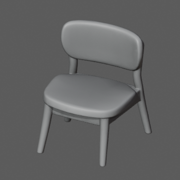식탁 의자주방 · Seating · None · Floor18984 trianglesAssets/Gameplay/Item/Furniture/Seating/Kitchen/DiningChair.prefab
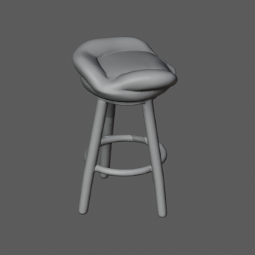바 의자주방 · Seating · None · Floor24724 trianglesAssets/Gameplay/Item/Furniture/Seating/Kitchen/Stool.prefab
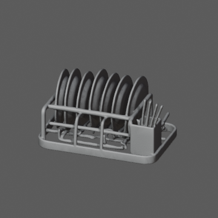접시 받침대주방 · Decoration · None · Surface113052 trianglesAssets/Gameplay/Item/Furniture/Decoration/Kitchen/DishRack.prefab
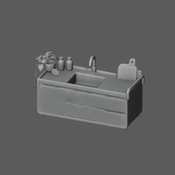싱크대주방 · WaterSource · None · Floor136794 trianglesAssets/Gameplay/Item/Furniture/WaterSource/Kitchen/Sink.prefab
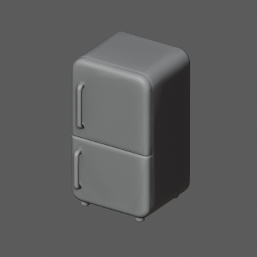냉장고주방 · Storage · Food · Floor10148 trianglesAssets/Gameplay/Item/Furniture/Storage/Food/Kitchen/Fridge.prefab
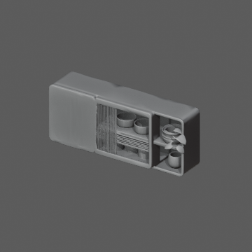주방 벽 선반주방 · Decoration · None · Wall98612 trianglesAssets/Gameplay/Item/Furniture/Decoration/Kitchen/WallCabinet.prefab
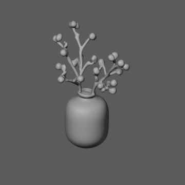탁상 화병필수 가구 · Decoration · None · Surface43952 trianglesAssets/Gameplay/Item/Furniture/Decoration/Essentials/FlowerVase.prefab
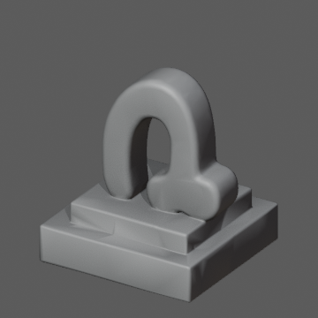탁상 오브제필수 가구 · Decoration · None · Surface6662 trianglesAssets/Gameplay/Item/Furniture/Decoration/Essentials/Sculpture.prefab
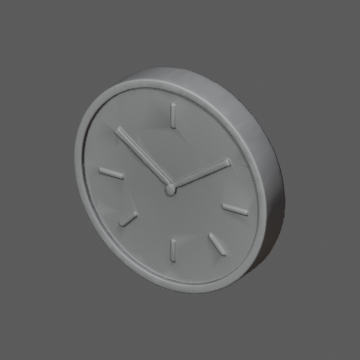벽시계필수 가구 · Decoration · None · Wall24020 trianglesAssets/Gameplay/Item/Furniture/Decoration/Essentials/WallClock.prefab
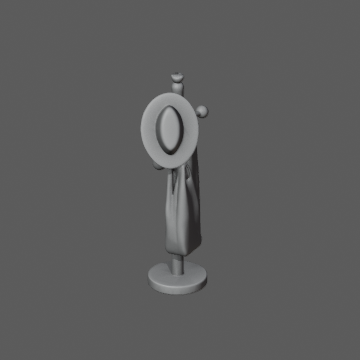행거필수 가구 · Storage · Clothing · Floor87898 trianglesAssets/Gameplay/Item/Furniture/Storage/Clothing/Essentials/CoatRack.prefab
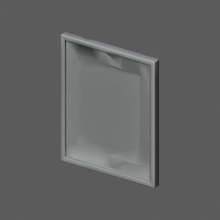벽 액자 A필수 가구 · Decoration · None · Wall1914 trianglesAssets/Gameplay/Item/Furniture/Decoration/Essentials/FrameA.prefab
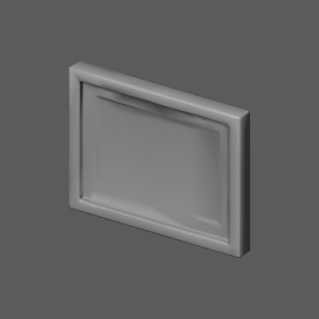벽 액자 B필수 가구 · Decoration · None · Wall1130 trianglesAssets/Gameplay/Item/Furniture/Decoration/Essentials/FrameB.prefab
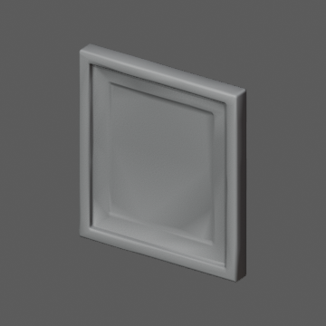벽 액자 C필수 가구 · Decoration · None · Wall1130 trianglesAssets/Gameplay/Item/Furniture/Decoration/Essentials/FrameC.prefab
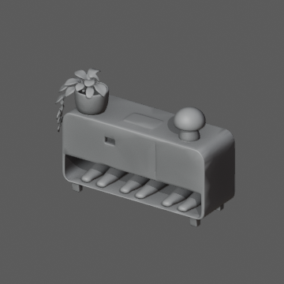신발장필수 가구 · Storage · Clothing · Floor75956 trianglesAssets/Gameplay/Item/Furniture/Storage/Clothing/Essentials/ShoeCabinet.prefab
쿠션필수 가구 · Decoration · None · Floor39772 trianglesAssets/Gameplay/Item/Furniture/Decoration/Essentials/Cushion.prefab
세탁기필수 가구 · Decoration · None · Floor17862 trianglesAssets/Gameplay/Item/Furniture/Decoration/Essentials/Washer.prefab
패브릭 박스필수 가구 · Storage · General · Floor3820 trianglesAssets/Gameplay/Item/Furniture/Storage/General/Essentials/FabricBox.prefab
나무 박스필수 가구 · Storage · General · Floor4270 trianglesAssets/Gameplay/Item/Furniture/Storage/General/Essentials/WoodBox.prefab
네모 바구니필수 가구 · Storage · General · Floor219342 trianglesAssets/Gameplay/Item/Furniture/Storage/General/Essentials/SquareBasket.prefab
동그란 바구니필수 가구 · Storage · General · Floor58772 trianglesAssets/Gameplay/Item/Furniture/Storage/General/Essentials/RoundBasket.prefab
화분 큰잎필수 가구 · Decoration · None · Floor176310 trianglesAssets/Gameplay/Item/Furniture/Decoration/Essentials/PlantLarge.prefab
화분 덩굴필수 가구 · Decoration · None · Floor38348 trianglesAssets/Gameplay/Item/Furniture/Decoration/Essentials/PlantTrailing.prefab
화분 작은잎필수 가구 · Decoration · None · Floor55830 trianglesAssets/Gameplay/Item/Furniture/Decoration/Essentials/PlantSmall.prefab
커튼필수 가구 · Decoration · None · Window128332 trianglesAssets/Gameplay/Item/Furniture/Decoration/Essentials/Curtain.prefab